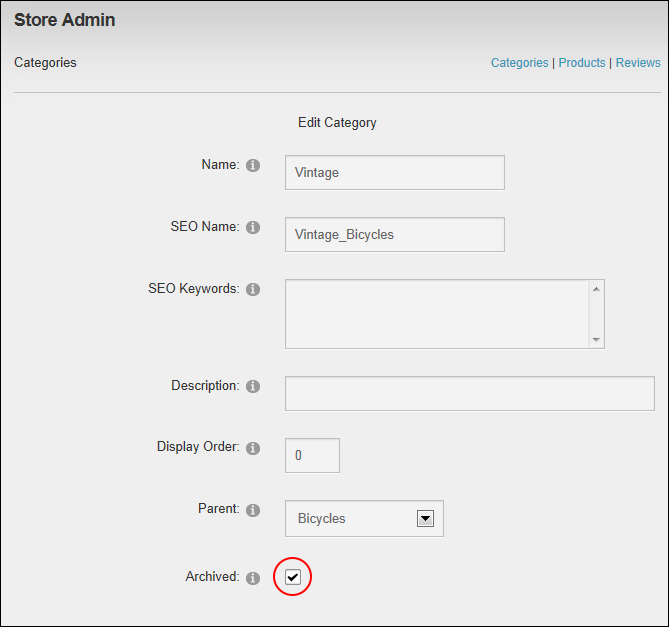

Managing Product Category Archiving
Catalog Managers can enable or disable archiving of a product category on the Store module using the Store Admin module.
- On the Store Admin module, click the Categories link.
- Click the Edit link beside the category to be archived.
- At Archived, select from these options:
- Mark
 the check box to archive the product. Archiving a category removes it and its associated products from the Store Menu module. Archiving a parent category, will archive all of its child categories.
the check box to archive the product. Archiving a category removes it and its associated products from the Store Menu module. Archiving a parent category, will archive all of its child categories. - Unmark
 the check box to remove archiving. Restoring a category will display it in the Store Menu module. Restoring a parent category also restores all child categories unless they are individually set as archived.
the check box to remove archiving. Restoring a category will display it in the Store Menu module. Restoring a parent category also restores all child categories unless they are individually set as archived.
-
Click the Update button.

- Repeat Steps 2-4 to modify archive status for additional categories.